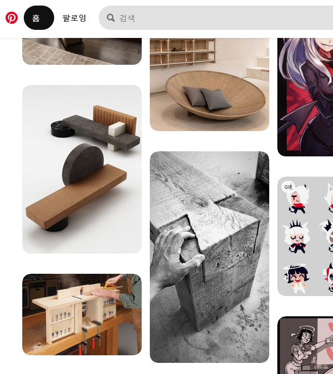
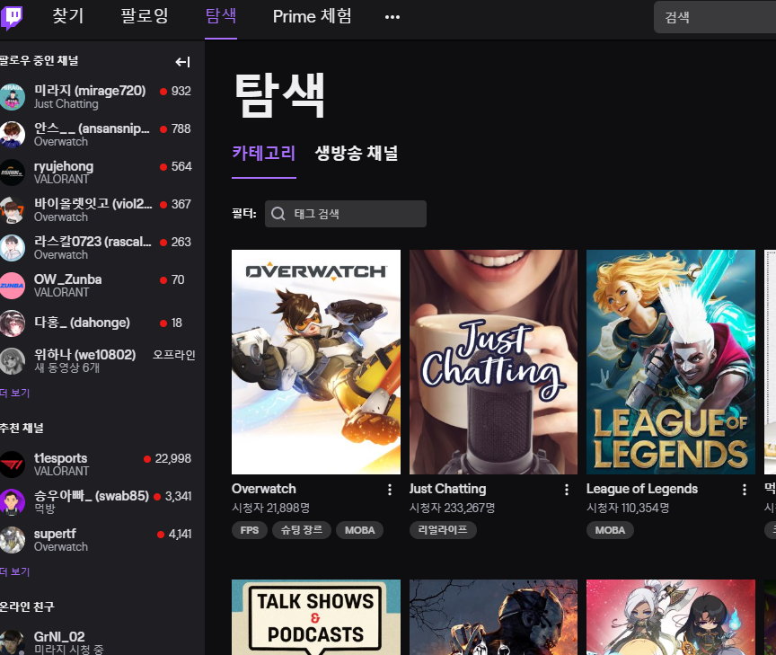

I referred to the following sections to make this project.
Pinterest is an American image sharing and social media service designed to enable saving and discovery of information (specifically "ideas") on the World Wide Web using images and, on a smaller scale, GIFs and videos, in the form of pinboards.
I referred to the screen segmentation method of pinterest.
Twitch
Twitch is a video live streaming service operated by Twitch Interactive, a subsidiary of Amazon.
I referred to the tag style method of Twitch.